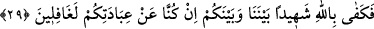

belirten mecâzî bir ifadedir. Şöyle ki bu tapınma ortak koştukları şeylerin emri ve
irâdesi ile gerçekleşmiyordu. Bu tapınmayı müşriklere emreden, sırf kendi hevâları ve
şeytanlarıydı. Bu bakımdan müşrikler aslında kendi hevâlarına ve kendilerini azdıran
şeytanlarına tapınmaktaydılar.
29. “Şimdi bizimle sizin aranızda şahit olarak Allah yeter. Doğrusu biz sizin (bize)
tapınmanızdan tamâmen habersizdik!”
“Şimdi bizimle sizin aranızda şahit olarak Allah yeter.” Çünkü meselenin künhünü
bilen O’dur. “Doğrusu biz sizin” bize “tapmanızdan tamamen habersizdik.”
Buradaki “habersiz olma”, bu tapınmaya râzı olmamaktan kinâyedir. Çünkü meleklerin
bu tapınmadan habersiz olmaları düşünülemez. Bu durum, söylendiği gibi ortaklarla
şeytanların kastedilmiş olması ihtimâlini kesin hâle getirir. Çünkü şeytanlar her ne kadar
müşrikleri ortak koşmaya zorlayamazlarsa da bu ortak koşmadan hoşnut oldukları
şüphesizdir. el-İrşâd’da böyle denilmektedir. Bu mânâ, ortak koşulanlarla ilim sâhibi
olanların kastedilmiş olmasına göredir.
Eğer putlar kastedilmişse onların hiçbir şuûr ve hisse sâhip olmayan cansız varlıklar
olması “habersiz olma”nın en büyük sebeplerindendir.
30. İşte orada her can, geçmişte yaptıklarını karşısında bulur. Artık onlar gerçek
sahipleri olan Allah’a döndürülürler ve uydurdukları şeyler kendilerinden kaybolup
gider.
“İşte orada” o dehşet yerinde veya işte o vakitte mü’min-kâfir, cennetlik-cehennemlik
“her can, geçmişte yaptıklarını” önceden yapmış olduğu amelleri “karşısında bulur”
onları yoklar, tartar ve tadar. Yaptığı amelin faydasını ve zararını kendi gözleriyle
görür. Ölüm anından itibaren berzah âleminde duçâr olduğu azâb dolayısıyla
bildiklerinden ise bahsedilmemiştir. Boş yere rab edindiklerine değil “gerçek” rab
olduğu kesin ve doğru “sahipleri” rableri “olan Allah’a” yani Allah’ın cezâsına,
azâbına “döndürülürler.” Çünkü Allah’ın, zâtına dönmek imkânsızdır.
Şeyh tefsirinde şöyle diyor: “Gerçek sahipleri” demek, gerçekte işlerini yürüten ve
sâhip olan demektir. Bu âyet ile “Kâfirlerin mevlâsı yoktur” (Muhammed, 47/11) âyeti